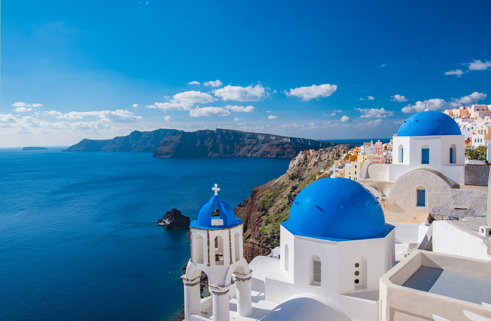
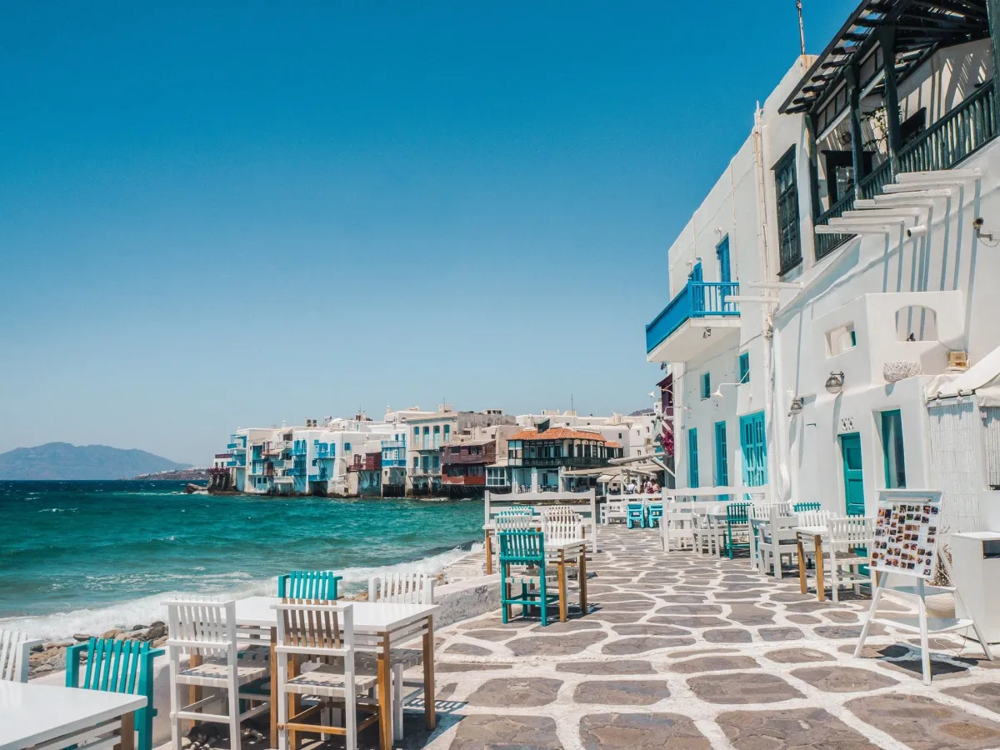
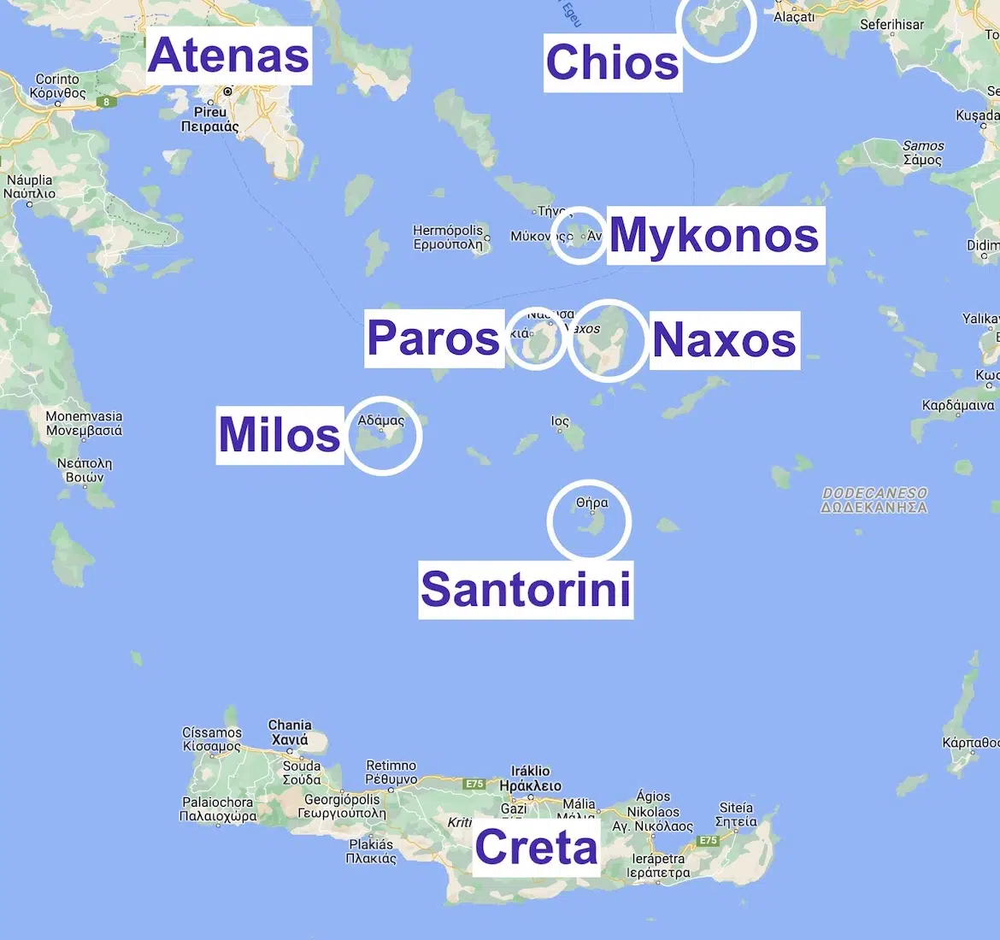

Sobre o destino
As Ilhas Gregas são conhecidas por suas paisagens deslumbrantes, vilarejos brancos, águas azul-turquesa e pores do sol inesquecíveis. Santorini e Mykonos são dois dos destinos mais famosos da Grécia.
Pontos Turísticos Imperdíveis:
- Santorini: Casas brancas e pôr do sol em Oia.
- Mykonos: Praias e vida noturna vibrante.
- Ilhas Cíclades: Paisagens típicas gregas.
- Praias do Mar Egeu: Águas cristalinas.
- Vilarejos tradicionais: Cultura e arquitetura única.
Guia Rápido

Melhor época: Maio a junho e setembro a outubro - clima agradável e menos turistas.

Como chegar: Voos para Atenas e conexões de ferry ou avião para ilhas como Santorini e Mykonos.

Idioma: Grego - inglês é muito falado nas áreas turísticas.

Moeda: Euro (€) - cartões são aceitos na maioria dos lugares.
Custos Médios
- Hotel: €80 - €300 por noite
- Alimentação: €20 - €60 por refeição
- Transporte: €10 - €50
Localização
Galeria de Fotos


